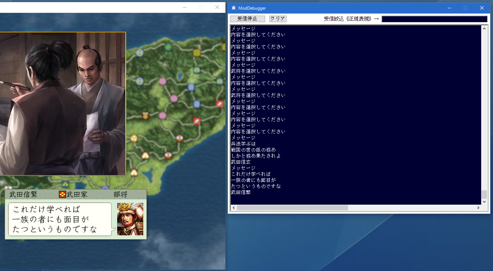

このツールは、%(tshd)sのMod開発者、及び、HD.version.SDK開発者に向けた
デバッグ用途コンソールモニターです。
アプリケーションなどのデバッグ出力の受信機です。

上記、.zipファイルを解凍し、HD.ModDebugger.exe を「天翔記フォルダ」に入れる。
HD.ModDebugger.exe を実行。
「src.zip」は、HD.ModDebugger.exe を作成するためのC++ソースファイルとなります。
実行する上では必要ありません。
ご自分で機能を変更したい場合などの用途に利用してください。
%(tshd)sが立ち上がっていると、%(tshd)sののみを監視するようになります。
この際は、%(tshd)s専用の、｢デバッグモニター監視ツール｣になります。
この間、他のアプリケーションの情報は拾いません。
%(tshd)sが立ち上がっていない間は、その他のアプリケーションのデバッグ情報を拾います。
%(ts95)s用のModDebuggerは%(home)sのModDebuggerとなります。